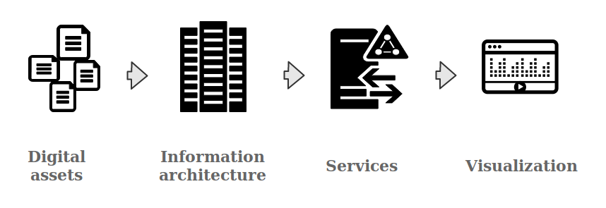

Introduzione alle edizioni digitali
Università di Berna, 3 agosto 2023
Elena Spadini (Università di Basilea)
- Premessa: come funziona un progetto digitale
- Edizione digitale
- Criteri per la recensione di edizioni digitali
- Paradigma digitale, filologia digitale
Come funziona un progetto digitale?

Drucker 2021

dati prodotti, trattati, analizzati
Digital scholarly editions are not just scholarly editions in digital media: digital ≠ digitized
"Wiedergabe ohne Erschließung ist keine Edition. Eine bloße Reproduktion, ein einfaches Faksimile, eine digitale Bibliothek ist keine Edition"
"Deshalb kann eine digitale Edition nicht einfach die digitale Fassung einer auch im Druck realisierbaren Edition sein – zu ihrem Wesen gehört, dass sie über die Beschränkungen der typografischen Edition hinweggeht"
(Sahle 2016/2: 141-142; 149)
A digital edition can not be printed without a loss of information and/or functionality
"Eine digitale Edition ist dadurch bestimmt, dass sie nicht ohne wesentliche Informations- und Funktionsverluste in eine typografi sche Form gebracht werden kann – und in diesem Sinne über die druckbare Edition hinausgeht."
(Sahle 2016/2: 149)
Criteri per la recensione delle edizioni digitali
Portata
3.3. Mission. Quali obiettivi si propone di raggiungere l’EDS? Essa riesce a raggiungerli? Cosa promette di rappresentare in modo esplicito? E cosa suggerisce di rappresentare, implicitamente, ad esempio sulla base di come l’EDS viene classificata (“edizione”, “edizione critica”, “portale”, “opera omnia”, “archivio digitale”, ecc.)? A quale pubblico si rivolge l’EDS?
RIDE Criteria
Quale approccio critico
3.4. Metodo
3.5. Rappresentazione di documenti e di testi
3.6. Critica, indicizzazione e commento
RIDE Criteria
digital archive | edition | thematic research collection |
project | arsenal | text collection
Price 2009
archivio come collezione di documenti storici
edizione come analisi e ipotesi su quei documenti
The Shelley-Godwin Archive
Emily Dickinson's Archive
Deutsche Textarchiv
Faust Edition
Édition des journaux d'Alexandre Dumas
La Entretenida Digital Edition
archivio ----------------------------------- edizione
every expression of the archival impulse is to some extent editorial [...] every expression of the editorial impulse is to some extent archival
Eggert 2017; cfr. Dillen 2019
Yet, there is one thing missing from Shaw’s edition. She does not provide her own edited text. This absence strikes me as the single most remarkable element of the edition. It shifts the focus away from the editor, as maker of a text, to the documents themselves and what we might learn from them. The centre of the edition is not the product: the edited text, with all else seen as ancillary, preparatory, and explanatory. The centre of the edition is the process: the search for understanding of all these documents and how they relate to each other.
Robinson 2016
Interfaccia
4.2. Interfaccia e fruibilità
4.3. Navigazione
4.4. Ricerca
RIDE Criteria
Presentazione
4.6. Qualità della presentazione. Nel caso in cui siano presenti delle immagini, la loro qualità è sufficiente per soddisfare i principali interessi di ricerca? [...] L’utente può usufruire di differenti presentazioni dello stesso materiale, ad esempio può passare dalla trascrizione diplomatica a quella normalizzata?
RIDE Criteria
Separazione di dati (contenuto) e presentazione (forma)
The ability to create a plurality of interfaces for any given dataset is a major advantage that the digital medium affords us. [...] . Digital scholarly edition projects in which data and interface are tightly coupled and data is not easily representable in rival displays pushes us back to the paradigm of the print medium where form and content are inseparable.
Witt 2018, p. 219
Citazione
1.2. Identificazione bibliografica dell’EDS recensita
4.8. Identificazione e citazione
RIDE Criteria
Dati e modelli di dati
3.7. Data modelling. Come viene implementata dal punto di vista tecnico la metodologia di edizione? Quale data model viene applicato? Le informazioni relative al data model sono sufficienti? [...]
4.9. Interfacce tecniche
4.12. Accesso ai dati
4.13. Diritti e licenze
RIDE Criteria
it should be remembered at every point that the "data" were not given, but "taken" and are actually "capta", information captured through a process of abstraction and structuring that depends upon decisions that are already acts of interpretation
Drucker 2021, p. 26
> Decidere cosa entra nel magazzino e come organizzarlo
Dati (strutturati) sono espressione di un modello e di un'interpretazione
Modello di dati
The models provide formalized perspectives on their subjects, expressed in a way that makes possible to gather specific information about the subject. In short, the formalized model determines which aspects of the subject will be computable and in what form.
Flanders and Jannidis, “Data Modeling”, in A New Companion to Digital Humanities, 2016
Un modello [...] consiste nella specificazione formale delle proprietà astratte degli oggetti rappresentati, insieme con le operazioni definibili su tali elementi e le restrizioni che si applicano alle diverse classi di oggetti
i requisiti fondamentali per garantirne [alla rappresentazione digitale del testo] l'adegualezza funzionale debbono essere assicurati dalla definizione di un modello di dati in grado di formalizzare i procedimenti analitici e critici applicabili allo studio del testo
Dino Buzzetti, “Rappresentazione digitale e modello del testo” 1999
I modelli [...] rappresentano costrutti dotati di un significato più circoscritto di quello delle leggi e delle teorie scientifiche e hanno una connotazione strumentalistica. In altri termini, si suole ritenere che il modello non abbia portata generale, ma limitata a un contesto, e possa essere giudicato «buono» quando si rivela utile a scopi precisi (descrittivi, esplicativi o previsionali) non necessariamente quando lo si ritiene «vero».
Maria Carla Galavotti, “Leggi, modelli causali e manipolabilità” 1999
Del ruolo dei modelli nella scienza rende invece adeguatamente conto il modello analitico. Ciò dipende dal fatto che formulare un modello di certi fenomeni equivale a formulare un'ipotesi su quei fenomeni, e la formulazione del modello avviene in base a quegli stessi procedimenti logici, quali l'induzione e l'analogia, che il modello analitico pone alla base della formulazione delle ipotesi.
Carlo Cellucci, “I modelli, l'analogia e la metafora” 1999
Esempi
Cosa includere nei dati, quale modello, per rispondere a quale domanda di ricerca.
Dal documento alla rete di documenti
Hermann Burger: Lokalbericht. Digitale Edition. Herausgegeben von Peter Dängeli, Magnus Wieland, Irmgard M. Wirtz und Simon Zumsteg. Version. Bern 2016
Paradigma digitale, filologia digitale
Quali problemi/domande di ricerca e quali soluzioni
paradigms [...] I take to be universally recognized scientific achievements that for a time provide model problems and solutions to a community of practitioners.
The existence of the paradigm sets the problem to be solved; often the paradigm theory is implicated directly in the design of apparatus able to solve the problem. [...] technology has often played a vital role in the emergence of new sciences
Kuhn 1962

“paradigms [...] I take to be universally recognized scientific achievements that for a time provide model problems and solutions to a community of practitioners.”
“The existence of the paradigm sets the problem to be solved; often the paradigm theory is implicated directly in the design of apparatus able to solve the problem. [...] technology has often played a vital role in the emergence of new sciences”
Kuhn 1962
Cambio di paradigma
Rivoluzione è un termine piuttosto generico, che usiamo con una certa spensieratezza. [...] In ogni caso vuol dire che qualcuno, invece di inventarsi una buona mossa, ha modificato la scacchiera: si chiama cambio di paradigma.
Baricco 2018, p. 27
Per l'ecdotica?
Continuità: edizione come ipotesi di lavoro, interpretazione
Rottura: pratiche filologiche basate sui dati, descrizione e processi espliciti e riproducibili, comunità più internazionale (polarizzazione mondo anglofono), diversi approcci e interfacce possono convivere, ordinamento meno gerarchico degli elementi
Per l'ecdotica?
Continuità: edizione come ipotesi di lavoro, interpretazione
Rottura: pratiche filologiche basate sui dati, descrizione e processi espliciti e riproducibili, comunità più internazionale (polarizzazione mondo anglofono), diversi approcci e interfacce possono convivere, ordinamento meno gerarchico degli elementi
copy-text | Bédierism | neo-lachmannismo | critique génétique | filologia d'autore | new bibliography | Historisch-kritische Ausgabe | etc.
Alla scuola del Rajna non s'imparava nessun sistema […] Eran sempre
esercitazioni su casi concreti, e la conclusione era sempre : - così si vede che
procedendo razionalmente i problemi si pongono nei giusti termini, e una soluzione
soddisfacente, più o meno perfetta, secondo i dati di cui si dispone, non può mai
mancare. - Noi uscivamo pertanto colla giusta idea che ogni testo ha il suo problema
critico, ogni problema la sua soluzione
Barbi 1938, p. X
Philologie des données | Pratiche filologiche basate sui dati | Data-driven philology
Ce glissement du regard, du numérique comme medium de diffusion et de lecture d’une philologie traditionnelle, au computationnel comme vecteur d’une transformation méthodologique profonde, mène naturellement vers une philologie qui place en son centre les données (et leurs modèles), par la redéfinition de leur amont (production), comme de leur aval (analyse).
Camps 2018
paradigma digitale
Trascrizione e collazione
Manuale: trascrizione di un testimone, collazione per loci o integrale
→ testo critico + apparato
Digitale: trascrizione semi-automatica di tutti i testimoni, collazione integrale semi-automatica
→ dati (per stabilire testo critico, analisi, visualizzazione, remix)
Collazione semi-automatica
- senza testo di base
- nessuna distinzione tra errore e variante
- possibile categorizzazione su base linguistica (forma e contenuto)
Esempio
- il fanciullo mangiava una mela
- il ragazzo mangiava la mela
- il fanciullo mangiava due mele
Esempio
- Se ne raccontano di cotte e di crude, sul fuoco del N.o 14. Ma la verità è che
neanche S. E. Filippo Tommaso Marinetti potrebbe simultanare tutto quel che
stava succedendo in quel casamento
Se ne contano di cotte e di crude sul fuoco del numero quattordici. Ma neppur S.
E. Filippo Tommaso Marinetti potrebbe simultanare tutto quel che stava
succedendo in quel casamento
- Se ne contano di cotte e di crude sul fuoco del numero quattordici. Ma neppur S.
E. Filippo Tommaso Marinetti potrebbe simultanare tutto quel che stava
succedendo in quel casamento
Fasi testuali di Gadda, L'incendio di via Keplero (Italia 2017, p. 110)

Sahle 2013
Contesto
- Dottorato
- Collaborazione
- Risorse e competenze
By means of this new tool [Tustep], which we have in electronic data processing, new and higher standards are imposed not only on the results of others sciences, but also on critical editions - standards which can scarcely be satisfied by traditional methods. This is, in my view, the main reason why electronic data processing should be employed in the preparation of critical editions, especially in large and complex projects. The question whether it is possible or not to save time and / or money by these methods is only of secondary importance. The expenses necessary for future critical editions may possibly be even higher than they have been in the past when these tools were not yet available.
Ott 1973
Image : Michael Mandiberg,
DATA BASE, 2009 (CC BY-SA 2.0)
Filologia protagonista in un paradigma digitale
productively integrate the new methods without surrendering control over the conceptual infrastructure of our work
Rieder and Rhöle : 71. Cf. Burdick et al. 2012: 101
Yet it seems impossible to imagine a future when the scholars will cease to use and produce digital resources. Therefore, either the scholarly community engages with the digital framework, or the key decisions and models will be established elsewhere (by publishing houses and software developers, for instance), and imposed top-down. This book intends, therefore, to promote the empowerment of the (digital) editors, a sort of call to arms to become protagonists of digital textual scholarship, setting agendas and goals dictated by research purposes and not by the possibilities offered by the medium.
Pierazzo 2015: 5
Probabilmente ci volevano ingegneri per scassinare il '900 e farlo esplodere, ma se l'altra intelligenza non entra al più presto nei processi di produzione del Game, è difficile che il futuro ci riservi un habitat sostenibile. C'è bisogno di cultura femminile, di sapere umanistico, di memoria non americana, di talenti cresciuti nella sconfitta e di intelligenze che vengono dai margini.
Barricco 2018: 323
La differenza tra l'età nostra e la passata sta
nel rigore del metodo.
Si è sostituita la
logica inflessibile e la precisione scientifica
ad un procedere intuitivo; la macchina alla
mano libera.
Così avviene che possan
fornire un lavoro soddisfacente anche
artefici mediocri.
Badiam bene tuttavia.
Non per ciò divien superfluo l'ingegno
Rajna 1907
4.16. Utilizzo a lungo termine. Quali sono le prospettive dell’EDS per un suo utilizzo a lungo termine? L’edizione è conclusa o è in fieri (e necessita quindi di ulteriori modifiche e di aggiunte)? Esiste un supporto istituzionale che si prenda cura dell’edizione e della sua sostenibilità? I basic data sono archiviati? Esiste un progetto per garantire un accesso duraturo all’edizione?